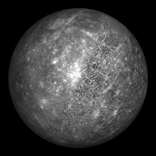
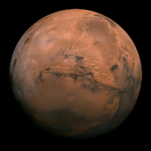

The Solar System is the gravitationally bound system of the Sun and the objects that orbit it, either directly or indirectly. Of the objects that orbit the Sun directly, the largest are the eight planets, with the remainder being smaller objects, the dwarf planets and small Solar System bodies. Of the objects that orbit the Sun indirectly—the natural satellites—two are larger than the smallest planet, Mercury.The Solar System formed 4.6 billion years ago from the gravitational collapse of a giant interstellar molecular cloud. The vast majority of the system's mass is in the Sun, with the majority of the remaining mass contained in Jupiter. The four smaller inner system planets, Mercury, Venus, Earth and Mars, are terrestrial planets, being primarily composed of rock and metal. The four outer system planets are giant planets, being substantially more massive than the terrestrials.
A star is an astronomical object consisting of a luminous spheroid of plasma held together by its own gravity. The nearest star to Earth is the Sun. Many other stars are visible to the naked eye at night, but due to their immense distance from Earth they appear as fixed points of light in the sky. The most prominent stars are grouped into constellations and asterisms, and many of the brightest stars have proper names. Astronomers have assembled star catalogues that identify the known stars and provide standardized stellar designations.
A galaxy is a gravitationally bound system of stars, stellar remnants, interstellar gas, dust, and dark matter. The word is derived from the Greek galaxias (γαλαξίας), literally "milky", a reference to the Milky Way. Galaxies range in size from dwarfs with just a few hundred million (108) stars to giants with one hundred trillion (1014) stars, each orbiting its galaxy's center of mass.Galaxies are categorized according to their visual morphology as elliptical, spiral, or irregular. Many are thought to have supermassive black holes at their centers.
An astronomical object or celestial object is a naturally occurring physical entity, association, or structure that exists in the observable universe. In astronomy, the terms object and body are often used interchangeably. However, an astronomical body or celestial body is a single, tightly bound, contiguous entity, while an astronomical or celestial object is a complex, less cohesively bound structure, which may consist of multiple bodies or even other objects with substructures.Examples of astronomical objects include planetary systems, star clusters, nebulae, and galaxies, while asteroids, moons, planets, and stars are astronomical bodies. A comet may be identified as both body and object: It is a body when referring to the frozen nucleus of ice and dust, and an object when describing the entire comet with its diffuse coma and tail.
A space probe, or simply probe, is a robotic spacecraft that doesn't orbit the Earth, but instead explores farther into outer space. A space probe may approach the Moon; travel through interplanetary space; flyby, orbit, or land or fly on other planetary bodies; or enter interstellar space.
The space agencies of the USSR (now Russia, Ukraine and others), the United States, the European Union, Japan, China, India, and Israel have collectively launched probes to several planets and moons of the Solar System, as well as to a number of asteroids and comets. Approximately 15 missions are currently operational.
Mercury is the smallest planet in the Solar System and the closest to the Sun. Its orbit around the Sun takes 87.97 Earth days, the shortest of all the Sun's planets. It is named after the Roman god Mercurius (Mercury), god of commerce, messenger of the gods, and mediator between gods and mortals, corresponding to the Greek god Hermes (Ἑρμῆς). Like Venus, Mercury orbits the Sun within Earth's orbit as an inferior planet, and its apparent distance from the Sun as viewed from Earth never exceeds 28°

‹
›
Name
Mercury
Semi Major Axis
57909227 km
perihelion
46001200 km
aphelion
69816900 km
eccentricity
0.2056
inclination
7 °
length of year
87.969 days
length of a day
1407.6 hours
axial tilt
0.0352 °
mean anomaly
174.796 °
moons
No moons
mass
3.30114 × 10^23 kg
volume
6.083 × 10^10 m^3
density
5.4291 g/cm^3
gravity
3.7 m/s^2
escape velocity
4250 m/s
mean radius
2439.4 m
equilateral radius
2440.53 m
polar radius
2439.7 m
flattening
0
. This proximity to the Sun means the planet can only be seen near the western horizon after sunset or the eastern horizon before sunrise, usually in twilight. At this time, it may appear as a bright star-like object but is often far more difficult to observe than Venus. From Earth, the planet telescopically displays the complete range of phases, similar to Venus and the Moon, which recurs over its synodic period of approximately 116 days.
Mercury rotates in a way that is unique in the Solar System. It is tidally locked with the Sun in a 3:2 spin–orbit resonance, meaning that relative to the fixed stars, it rotates on its axis exactly three times for every two revolutions it makes around the Sun. As seen from the Sun, in a frame of reference that rotates with the orbital motion, it appears to rotate only once every two Mercurian years. An observer on Mercury would therefore see only one day every two Mercurian years.
Mercury's axis has the smallest tilt of any of the Solar System's planets (about 1⁄30 degree). Its orbital eccentricity is the largest of all known planets in the Solar System; at perihelion, Mercury's distance from the Sun is only about two-thirds (or 66%) of its distance at aphelion. Mercury's surface appears heavily cratered and is similar in appearance to the Moon's, indicating that it has been geologically inactive for billions of years. Having almost no atmosphere to retain heat, it has surface temperatures that vary diurnally more than on any other planet in the Solar System, ranging from 100 K (−173 °C; −280 °F) at night to 700 K (427 °C; 800 °F) during the day across the equatorial regions. The polar regions are constantly below 180 K (−93 °C; −136 °F). The planet has no known natural satellites.
Two spacecraft have visited Mercury: Mariner 10 flew by in 1974 and 1975; and MESSENGER, launched in 2004, orbited Mercury over 4,000 times in four years before exhausting its fuel and crashing into the planet's surface on April 30, 2015. The BepiColombo spacecraft is planned to arrive at Mercury in 2025.
Venus is the second planet from the Sun. It is named after the Roman goddess of love and beauty. As the brightest natural object in Earth's night sky after the Moon, Venus can cast shadows and can be, on rare occasions, visible to the naked eye in broad daylight. Venus lies within Earth's orbit, and so never appears to venture far from the Sun, either setting in the west just after dusk or rising in the east a little while before dawn. Venus orbits the Sun every 224
‹
›
Name
Venus
Semi Major Axis
108208475 km
perihelion
107477000 km
aphelion
108939000 km
eccentricity
0.0067
inclination
3.39 °
length of year
224.701 days
length of a day
-5832.5 hours
axial tilt
177.36 °
mean anomaly
50.115 °
moons
No moons
mass
4.86747 × 10^24 kg
volume
9.2843 × 10^11 m^3
density
5.243 g/cm^3
gravity
8.87 m/s^2
escape velocity
10360 m/s
mean radius
6051.8 m
equilateral radius
6051.8 m
polar radius
6051.8 m
flattening
0
.7 Earth days. It has a synodic day length of 117 Earth days and a sidereal rotation period of 243 Earth days. As a consequence, it takes longer to rotate about its axis than any other planet in the Solar System, and does so in the opposite direction to all but Uranus. This means the Sun rises in the west and sets in the east. Venus does not have any moons, a distinction it shares only with Mercury among the planets in the Solar System.Venus is a terrestrial planet and is sometimes called Earth's "sister planet" because of their similar size, mass, proximity to the Sun, and bulk composition. It is radically different from Earth in other respects. It has the densest atmosphere of the four terrestrial planets, consisting of more than 96% carbon dioxide. The atmospheric pressure at the planet's surface is about 92 times the sea level pressure of Earth, or roughly the pressure at 900 m (3,000 ft) underwater on Earth. Even though Mercury is closer to the Sun, Venus has the hottest surface of any planet in the Solar System, with a mean temperature of 737 K (464 °C; 867 °F). Venus is shrouded by an opaque layer of highly reflective clouds of sulfuric acid, preventing its surface from being seen from space in visible light. It may have had water oceans in the past, but these would have vaporized as the temperature rose under a runaway greenhouse effect. The water has probably photodissociated, and the free hydrogen has been swept into interplanetary space by the solar wind because of the lack of a planetary magnetic field.As one of the brightest objects in the sky, Venus has been a major fixture in human culture for as long as records have existed. It has been made sacred to gods of many cultures, and has been a prime inspiration for writers and poets as the "morning star" and "evening star". Venus was the first planet to have its motions plotted across the sky, as early as the second millennium BC.Its proximity to Earth has made Venus a prime target for early interplanetary exploration. It was the first planet beyond Earth visited by a spacecraft (Mariner 2 in 1962), and the first to be successfully landed on (by Venera 7 in 1970). Venus's thick clouds render observation of its surface impossible in visible light, and the first detailed maps did not emerge until the arrival of the Magellan orbiter in 1991. Plans have been proposed for rovers or more complex missions, but they are hindered by Venus's hostile surface conditions. The possibility of life on Venus has long been a topic of speculation, and in recent years has received active research.
Earth is the third planet from the Sun and the only astronomical object known to harbour and support life. About 29.2% of Earth's surface is land consisting of continents and islands. The remaining 70.8% is covered with water, mostly by oceans, seas, gulfs, and other salt-water bodies, but also by lakes, rivers, and other freshwater, which together constitute the hydrosphere
‹
›
Name
Earth
Semi Major Axis
149598262 km
perihelion
147095000 km
aphelion
152100000 km
eccentricity
0.0167
inclination
0 °
length of year
365.256 days
length of a day
23.9345 hours
axial tilt
23.4393 °
mean anomaly
358.617 °
moons
1
mass
5.97237 × 10^24 kg
volume
1.08321 × 10^12 m^3
density
5.5136 g/cm^3
gravity
9.8 m/s^2
escape velocity
11190 m/s
mean radius
6371.0084 m
equilateral radius
6378.1366 m
polar radius
6356.8 m
flattening
0.00335
. Much of Earth's polar regions are covered in ice. Earth's outer layer is divided into several rigid tectonic plates that migrate across the surface over many millions of years, while its interior remains active with a solid iron inner core, a liquid outer core that generates Earth's magnetic field, and a convective mantle that drives plate tectonics.
Earth's atmosphere consists mostly of nitrogen and oxygen. More solar energy is received by tropical regions than polar regions and is redistributed by atmospheric and ocean circulation. Greenhouse gases also play an important role in regulating the surface temperature. A region's climate is not only determined by latitude, but also by elevation and proximity to moderating oceans, among other factors. Severe weather, such as tropical cyclones, thunderstorms, and heatwaves, occurs in most areas and greatly impacts life.
Earth's gravity interacts with other objects in space, especially the Moon, which is Earth's only natural satellite. Earth orbits around the Sun in about 365.25 days. Earth's axis of rotation is tilted with respect to its orbital plane, producing seasons on Earth. The gravitational interaction between Earth and the Moon causes tides, stabilizes Earth's orientation on its axis, and gradually slows its rotation. Earth is the densest planet in the Solar System and the largest and most massive of the four rocky planets.
According to radiometric dating estimation and other evidence, Earth formed over 4.5 billion years ago. Within the first billion years of Earth's history, life appeared in the oceans and began to affect Earth's atmosphere and surface, leading to the proliferation of anaerobic and, later, aerobic organisms. Some geological evidence indicates that life may have arisen as early as 4.1 billion years ago. Since then, the combination of Earth's distance from the Sun, physical properties, and geological history have allowed life to evolve and thrive. In the history of life on Earth, biodiversity has gone through long periods of expansion, occasionally punctuated by mass extinctions. More than 99% of all species that ever lived on Earth are extinct. Almost 8 billion humans live on Earth and depend on its biosphere and natural resources for their survival. Humans increasingly impact Earth's surface, hydrology, atmospheric processes, and other life.
Mars is the fourth planet from the Sun and the second-smallest planet in the Solar System, being larger than only Mercury. In English, Mars carries the name of the Roman god of war and is often referred to as the "Red Planet". The latter refers to the effect of the iron oxide prevalent on Mars's surface, which gives it a reddish appearance (as shown), that is distinctive among the astronomical bodies visible to the naked eye. Mars is a terrestrial planet with a thin atmosphere, with surface features reminiscent of the impact craters of the Moon and the valleys, deserts and polar ice caps of Earth.
The days and seasons are comparable to those of Earth, because the rotational period as well as the tilt of the rotational axis relative to the ecliptic plane are similar

‹
›
Name
Mars
Semi Major Axis
227943824 km
perihelion
206700000 km
aphelion
249200000 km
eccentricity
0.0935
inclination
1.85 °
length of year
686.98 days
length of a day
24.6229 hours
axial tilt
25.19 °
mean anomaly
19.412 °
moons
2
mass
6.41712 × 10^23 kg
volume
1.6318 × 10^11 m^3
density
3.9341 g/cm^3
gravity
3.71 m/s^2
escape velocity
5030 m/s
mean radius
3389.5 m
equilateral radius
3396.19 m
polar radius
3376.2 m
flattening
0.00589
. Mars is the site of Olympus Mons, the largest volcano and highest known mountain on any planet in the Solar System, and of Valles Marineris, one of the largest canyons in the Solar System. The smooth Borealis basin in the Northern Hemisphere covers 40% of the planet and may be a giant impact feature. Mars has two moons, Phobos and Deimos, which are small and irregularly shaped. These may be captured asteroids, similar to 5261 Eureka, a Mars trojan.Mars has been explored by several uncrewed spacecraft. Mariner 4 was the first spacecraft to visit Mars; launched by NASA on 28 November 1964, it made its closest approach to the planet on 15 July 1965. Mariner 4 detected the weak Martian radiation belt, measured at about 0.1% that of Earth, and captured the first images of another planet from deep space. The Soviet Mars 3 mission included a lander, which achieved a soft landing in December 1971; however, contact was lost seconds after touchdown. On 20 July 1976, Viking 1 performed the first successful landing on the Martian surface. On 4 July 1997, the Mars Pathfinder spacecraft landed on Mars and on 5 July released its rover, Sojourner, the first robotic rover to operate on Mars. The Mars Express orbiter, the first European Space Agency (ESA) spacecraft to visit Mars, arrived in orbit on 25 December 2003. In January 2004, NASA's Mars Exploration Rovers, named Spirit and Opportunity, both landed on Mars; Spirit operated until 22 March 2010 and Opportunity lasted until 10 June 2018. NASA landed its Curiosity rover on August 6, 2012, as a part of its Mars Science Laboratory (MSL) mission to investigate Martian climate and geology. On 24 September 2014, the Indian Space Research Organisation (ISRO) became the fourth space agency to visit Mars when its maiden interplanetary mission, the Mars Orbiter Mission spacecraft, arrived in orbit. The United Arab Emirates became the fifth to successfully undertake a mission to Mars, having inserted an orbiter into the Martian atmosphere on 9 February 2021. China National Space Administration (CNSA)'s Tianwen-1 spacecraft arrived in Martian orbit on 10 February 2021. NASA's Perseverance rover and Ingenuity helicopter successfully landed on Mars on 18 February 2021. Ingenuity successfully completed the first powered controlled flight by an aircraft on any planet besides Earth on 19 April 2021, taking off vertically, hovering and landing on Mars. On 14 May 2021, CNSA's Tianwen-1 lander and Zhurong rover successfully landed on Mars. Zhurong rover was successfully deployed on 22 May 2021, which makes China the second country to successfully deploy a rover on Mars, after the United States.There are investigations assessing the past habitability of Mars, as well as the possibility of extant life. Astrobiology missions are planned, such as the European Space Agency's Rosalind Franklin rover. Liquid water on the surface of Mars cannot exist due to low atmospheric pressure, which is less than 1% of the atmospheric pressure on Earth, except at the lowest elevations for short periods. The two polar ice caps appear to be made largely of water. The volume of water ice in the south polar ice cap, if melted, would be sufficient to cover the planetary surface to a depth of 11 metres (36 ft). In November 2016, NASA reported finding a large amount of underground ice in the Utopia Planitia region. The volume of water detected has been estimated to be equivalent to the volume of water in Lake Superior.Mars can easily be seen from Earth with the naked eye, as can its reddish coloring. Its apparent magnitude reaches −2.94, which is surpassed only by Venus, the Moon and the Sun. Optical ground-based telescopes are typically limited to resolving features about 300 kilometres (190 mi) across when Earth and Mars are closest because of Earth's atmosphere.
Jupiter is the fifth planet from the Sun and the largest in the Solar System. It is a gas giant with a mass more than two and a half times that of all the other planets in the Solar System combined, but slightly less than one-thousandth the mass of the Sun. Jupiter is the third-brightest natural object in the Earth's night sky after the Moon and Venus. It has been observed since pre-historic times and is named after the Roman god Jupiter, the king of the gods, because of its observed size.
Jupiter is primarily composed of hydrogen, but helium constitutes one quarter of its mass and one tenth of its volume
‹
›
Name
Jupiter
Semi Major Axis
778340821 km
perihelion
740379835 km
aphelion
816620000 km
eccentricity
0.0489
inclination
1.304 °
length of year
4332.589 days
length of a day
9.925 hours
axial tilt
3.12 °
mean anomaly
20.02 °
moons
79
mass
1.89819 × 10^27 kg
volume
1.43128 × 10^15 m^3
density
1.3262 g/cm^3
gravity
24.79 m/s^2
escape velocity
60200 m/s
mean radius
69911 m
equilateral radius
71492 m
polar radius
66854 m
flattening
0.06487
. It likely has a rocky core of heavier elements, but like the other giant planets, Jupiter lacks a well-defined solid surface. The on-going contraction of its interior generates heat greater than the amount received from the Sun. Because of its rapid rotation, the planet's shape is that of an oblate spheroid; it has a slight but noticeable bulge around the equator. The outer atmosphere is visibly segregated into several bands at different latitudes, with turbulence and storms along their interacting boundaries. A prominent result of this is the Great Red Spot, a giant storm that is known to have existed since at least the 17th century, when it was first seen by telescope.
Surrounding Jupiter is a faint planetary ring system and a powerful magnetosphere. Jupiter's magnetic tail is nearly 800 million km long, covering the entire distance to Saturn's orbit. Jupiter has 80 known moons and possibly many more, including the four large Galilean moons discovered by Galileo Galilei in 1610. Ganymede, the largest of these, has a diameter greater than that of the planet Mercury.
Pioneer 10 was the first spacecraft to visit Jupiter, making its closest approach to the planet in December 1973. Jupiter has since been explored on a number of occasions by robotic spacecraft, beginning with the Pioneer and Voyager flyby missions from 1973 to 1979, and later by the Galileo orbiter, which arrived at Jupiter in 1995. In 2007, Jupiter was visited by the New Horizons probe, which used Jupiter's gravity to increase its speed and bend its trajectory en route to Pluto. The latest probe to visit the planet, Juno, entered orbit around Jupiter in July 2016. Future targets for exploration in the Jupiter system include the probable ice-covered liquid ocean of the moon Europa.The planetary symbol for Jupiter, ♃, descends from a Greek zeta with a horizontal stroke, ⟨Ƶ⟩, as an abbreviation for Zeus (the Greek name for the planet).
Saturn is the sixth planet from the Sun and the second-largest in the Solar System, after Jupiter. It is a gas giant with an average radius of about nine and a half times that of Earth. It only has one-eighth the average density of Earth; however, with its larger volume, Saturn is over 95 times more massive. Saturn is named after the Roman god of wealth and agriculture. Its astronomical symbol (♄) has been traced back to the Greek Oxyrhynchus Papyri, where it can be seen to be a Greek kappa-rho with a cross-bar, as an abbreviation for Κρονος (Cronos), the Greek name for the planet
‹
›
Name
Saturn
Semi Major Axis
1426666422 km
perihelion
1349823615 km
aphelion
1503509229 km
eccentricity
0.0565
inclination
2.485 °
length of year
10759.22 days
length of a day
10.656 hours
axial tilt
26.73 °
mean anomaly
317.02 °
moons
82
mass
5.68336 × 10^26 kg
volume
8.2713 × 10^14 m^3
density
0.6871 g/cm^3
gravity
10.44 m/s^2
escape velocity
36090 m/s
mean radius
58232 m
equilateral radius
60268 m
polar radius
54364 m
flattening
0.09796
.
It later came to look like a lower-case Greek eta, with the cross added at the top in the 16th century.
The Romans named the seventh day of the week Saturday, Sāturni diēs ("Saturn's Day") for the planet Saturn.Saturn's interior is most likely composed of a core of iron–nickel and rock (silicon and oxygen compounds). Its core is surrounded by a deep layer of metallic hydrogen, an intermediate layer of liquid hydrogen and liquid helium, and finally a gaseous outer layer. Saturn has a pale yellow hue due to ammonia crystals in its upper atmosphere. An electrical current within the metallic hydrogen layer is thought to give rise to Saturn's planetary magnetic field, which is weaker than the Earth's, but which has a magnetic moment 580 times that of Earth due to Saturn's larger size. Saturn's magnetic field strength is around one-twentieth of Jupiter's. The outer atmosphere is generally bland and lacking in contrast, although long-lived features can appear. Wind speeds on Saturn can reach 1,800 km/h (1,100 mph; 500 m/s), higher than on Jupiter but not as high as on Neptune.The planet's most famous feature is its prominent ring system, which is composed mostly of ice particles, with a smaller amount of rocky debris and dust. At least 82 moons are known to orbit Saturn, of which 53 are officially named; this does not include the hundreds of moonlets in its rings. Titan, Saturn's largest moon and the second largest in the Solar System, is larger than the planet Mercury, although less massive, and is the only moon in the Solar System to have a substantial atmosphere.
Uranus is the seventh planet from the Sun. Its name is a reference to the Greek god of the sky, Uranus, who, according to Greek mythology, was the great-grandfather of Ares (Mars), grandfather of Zeus (Jupiter) and father of Cronus (Saturn). It has the third-largest planetary radius and fourth-largest planetary mass in the Solar System. Uranus is similar in composition to Neptune, and both have bulk chemical compositions which differ from that of the larger gas giants Jupiter and Saturn. For this reason, scientists often classify Uranus and Neptune as "ice giants" to distinguish them from the other giant planets
‹
›
Name
Uranus
Semi Major Axis
2870658186 km
perihelion
2734998229 km
aphelion
3006318143 km
eccentricity
0.0457
inclination
0.772 °
length of year
30685.4 days
length of a day
-17.24 hours
axial tilt
97.77 °
mean anomaly
142.2386 °
moons
27
mass
8.68127 × 10^25 kg
volume
6.833 × 10^13 m^3
density
1.27 g/cm^3
gravity
8.87 m/s^2
escape velocity
21380 m/s
mean radius
25362 m
equilateral radius
25559 m
polar radius
24973 m
flattening
0.02293
discovered by
William Herschel
discovery date
13/03/1781
. Uranus's atmosphere is similar to Jupiter's and Saturn's in its primary composition of hydrogen and helium, but it contains more "ices" such as water, ammonia, and methane, along with traces of other hydrocarbons. It has the coldest planetary atmosphere in the Solar System, with a minimum temperature of 49 K (−224 °C; −371 °F), and has a complex, layered cloud structure with water thought to make up the lowest clouds and methane the uppermost layer of clouds. The interior of Uranus is mainly composed of ices and rock.Like the other giant planets, Uranus has a ring system, a magnetosphere, and numerous moons. The Uranian system has a unique configuration because its axis of rotation is tilted sideways, nearly into the plane of its solar orbit. Its north and south poles, therefore, lie where most other planets have their equators. In 1986, images from Voyager 2 showed Uranus as an almost featureless planet in visible light, without the cloud bands or storms associated with the other giant planets. Voyager 2 remains the only spacecraft to visit the planet. Observations from Earth have shown seasonal change and increased weather activity as Uranus approached its equinox in 2007. Wind speeds can reach 250 metres per second (900 km/h; 560 mph).
Neptune is the eighth and farthest-known Solar planet from the Sun. In the Solar System, it is the fourth-largest planet by diameter, the third-most-massive planet, and the densest giant planet. It is 17 times the mass of Earth, slightly more massive than its near-twin Uranus. Neptune is denser and physically smaller than Uranus because its greater mass causes more gravitational compression of its atmosphere. The planet orbits the Sun once every 164
‹
›
Name
Neptune
Semi Major Axis
4498396441 km
perihelion
4459753056 km
aphelion
4537039826 km
eccentricity
0.0113
inclination
1.769 °
length of year
60189 days
length of a day
16.11 hours
axial tilt
28.3 °
mean anomaly
256.228 °
moons
14
mass
1.02413 × 10^26 kg
volume
6.254 × 10^13 m^3
density
1.638 g/cm^3
gravity
11.15 m/s^2
escape velocity
23560 m/s
mean radius
24622 m
equilateral radius
24764 m
polar radius
24341 m
flattening
0.01708
discovered by
Urbain Le Verrier, John Couch Adams, Johann Galle
discovery date
23/09/1846
.8 years at an average distance of 30.1 AU (4.5 billion km; 2.8 billion mi). It is named after the Roman god of the sea and has the astronomical symbol ♆, a stylised version of the god Neptune's trident or the Greek letter psi.
Neptune is not visible to the unaided eye and is the only planet in the Solar System found by mathematical prediction rather than by empirical observation. Unexpected changes in the orbit of Uranus led Alexis Bouvard to deduce that its orbit was subject to gravitational perturbation by an unknown planet. After Bouvard's death, the position of Neptune was predicted from his observations, independently, by John Couch Adams and Urbain Le Verrier. Neptune was subsequently observed with a telescope on 23 September 1846 by Johann Galle within a degree of the position predicted by Le Verrier. Its largest moon, Triton, was discovered shortly thereafter, though none of the planet's remaining 13 known moons were located telescopically until the 20th century. The planet's distance from Earth gives it a very small apparent size, making it challenging to study with Earth-based telescopes. Neptune was visited by Voyager 2, when it flew by the planet on 25 August 1989; Voyager 2 remains the only spacecraft to visit Neptune. The advent of the Hubble Space Telescope and large ground-based telescopes with adaptive optics has recently allowed for additional detailed observations from afar.
Like Jupiter and Saturn, Neptune's atmosphere is composed primarily of hydrogen and helium, along with traces of hydrocarbons and possibly nitrogen, though it contains a higher proportion of "ices" such as water, ammonia and methane. However, similar to Uranus, its interior is primarily composed of ices and rock; Uranus and Neptune are normally considered "ice giants" to emphasise this distinction. Traces of methane in the outermost regions in part account for the planet's blue appearance, though an unknown component is believed to color Neptune a deeper blue compared to Uranus.In contrast to the hazy, relatively featureless atmosphere of Uranus, Neptune's atmosphere has active and visible weather patterns. For example, at the time of the Voyager 2 flyby in 1989, the planet's southern hemisphere had a Great Dark Spot comparable to the Great Red Spot on Jupiter. More recently, in 2018, a newer main dark spot and smaller dark spot were identified and studied. In addition, these weather patterns are driven by the strongest sustained winds of any planet in the Solar System, with recorded wind speeds as high as 2,100 km/h (580 m/s; 1,300 mph). Because of its great distance from the Sun, Neptune's outer atmosphere is one of the coldest places in the Solar System, with temperatures at its cloud tops approaching 55 K (−218 °C; −361 °F). Temperatures at the planet's centre are approximately 5,400 K (5,100 °C; 9,300 °F). Neptune has a faint and fragmented ring system (labelled "arcs"), which was discovered in 1984, then later confirmed by Voyager 2.
The Sun is the star at the center of the Solar System. It is a nearly perfect sphere of hot plasma, heated to incandescence by nuclear fusion reactions in its core, radiating the energy mainly as visible light, ultraviolet light, and infrared radiation. It is by far the most important source of energy for life on Earth. Its diameter is about 1.39 million kilometres (864,000 miles), or 109 times that of Earth. Its mass is about 330,000 times that of Earth; it accounts for about 99
constellation
--
evolutionary stage
Main sequence
distance
1.5 × 10^8 km
mass
1.98 × 10^30 kg
luminosity
3.75 × 10^28 lm
temperature
5772 K
age
4.6 byr
.86% of the total mass of the Solar System. Roughly three quarters of the Sun's mass consists of hydrogen (~73%); the rest is mostly helium (~25%), with much smaller quantities of heavier elements, including oxygen, carbon, neon and iron.The Sun is a G-type main-sequence star (G2V) based on its spectral class. As such, it is informally and not completely accurately referred to as a yellow dwarf (its light is closer to white than yellow). It formed approximately 4.6 billion years ago from the gravitational collapse of matter within a region of a large molecular cloud. Most of this matter gathered in the center, whereas the rest flattened into an orbiting disk that became the Solar System. The central mass became so hot and dense that it eventually initiated nuclear fusion in its core. It is thought that almost all stars form by this process.
The Sun's core fuses about 600 million tons of hydrogen into helium every second, converting 4 million tons of matter into energy every second as a result. This energy, which can take between 10,000 and 170,000 years to escape the core, is the source of the Sun's light and heat. When hydrogen fusion in its core has diminished to the point at which the Sun is no longer in hydrostatic equilibrium, its core will undergo a marked increase in density and temperature while its outer layers expand, eventually transforming the Sun into a red giant. It is calculated that the Sun will become sufficiently large to engulf the current orbits of Mercury and Venus, and render Earth uninhabitable – but not for about five billion years. After this, it will shed its outer layers and become a dense type of cooling star known as a white dwarf, and no longer produce energy by fusion, but still glow and give off heat from its previous fusion.
The enormous effect of the Sun on Earth has been recognized since prehistoric times. The Sun was thought of by some cultures as a deity. The synodic rotation of Earth and its orbit around the Sun are the basis of solar calendars, one of which is the Gregorian calendar, the predominant calendar in use today.
Sirius () is the brightest star in the night sky. Its name is derived from the Greek word Σείριος (Seirios, lit. 'glowing' or 'scorching'). The star is designated α Canis Majoris, Latinized to Alpha Canis Majoris, and abbreviated Alpha CMa or α CMa. With a visual apparent magnitude of −1.46, Sirius is almost twice as bright as Canopus, the next brightest star
constellation
Canis Major
evolutionary stage
Main sequence
distance
8.709 ly
mass
2.063 solar mass
luminosity
25.4 solar lumen
temperature
9940 K
age
242±5 myr
. Sirius is a binary star consisting of a main-sequence star of spectral type A0 or A1, termed Sirius A, and a faint white dwarf companion of spectral type DA2, termed Sirius B. The distance between the two varies between 8.2 and 31.5 astronomical units as they orbit every 50 years.Sirius appears bright because of its intrinsic luminosity and its proximity to the Solar System. At a distance of 2.64 parsecs (8.6 ly), the Sirius system is one of Earth's nearest neighbours. Sirius is gradually moving closer to the Solar System, so it is expected to slightly increase in brightness over the next 60,000 years. After that time, its distance will begin to increase, and it will become fainter, but it will continue to be the brightest star in the Earth's night sky for approximately the next 210,000 years.Sirius A is about twice as massive as the Sun (M☉) and has an absolute visual magnitude of +1.42. It is 25 times as luminous as the Sun, but has a significantly lower luminosity than other bright stars such as Canopus or Rigel. The system is between 200 and 300 million years old. It was originally composed of two bright bluish stars. The more massive of these, Sirius B, consumed its resources and became a red giant before shedding its outer layers and collapsing into its current state as a white dwarf around 120 million years ago.Sirius is known colloquially as the "Dog Star", reflecting its prominence in its constellation, Canis Major (the Greater Dog). The heliacal rising of Sirius marked the flooding of the Nile in Ancient Egypt and the "dog days" of summer for the ancient Greeks, while to the Polynesians, mostly in the Southern Hemisphere, the star marked winter and was an important reference for their navigation around the Pacific Ocean.
Betelgeuse is usually the tenth-brightest star in the night sky and, after Rigel, the second-brightest in the constellation of Orion. It is a distinctly reddish semiregular variable star whose apparent magnitude, varying between +0.0 and +1.6, has the widest range displayed by any first-magnitude star. At near-infrared wavelengths, Betelgeuse is the brightest star in the night sky. Its Bayer designation is α Orionis, Latinised to Alpha Orionis and abbreviated Alpha Ori or α Ori
constellation
Orion
evolutionary stage
Red supergiant
distance
548 ly
mass
16.5-19 solar mass
luminosity
90000-150000 solar lumen
temperature
3600 K
age
8-8.5 myr
.
Classified as a red supergiant of spectral type M1-2, Betelgeuse is one of the largest stars visible to the naked eye. If it were at the center of our Solar System, its surface would lie beyond the asteroid belt and it would engulf the orbits of Mercury, Venus, Earth, and Mars. Nevertheless, there are several larger stars in the Milky Way, including supergiants like Mu Cephei and the peculiar hypergiant, VY Canis Majoris. Calculations of Betelgeuse's mass range from slightly under ten to a little over twenty times that of the Sun. For various reasons, its distance has been quite difficult to measure; current best estimates are on the order of 500–600 light-years from the Sun – a comparatively wide uncertainty for a relatively nearby star. Its absolute magnitude is about −6. Less than 10 million years old, Betelgeuse has evolved rapidly because of its large mass and is expected to end its evolution with a supernova explosion, most likely within 100,000 years. Having been ejected from its birthplace in the Orion OB1 Association – which includes the stars in Orion's Belt – this runaway star has been observed moving through the interstellar medium at a speed of 30 km/s, creating a bow shock over four light-years wide.
In 1920, Betelgeuse became the first extrasolar star whose photosphere's angular size was measured. Subsequent studies have reported an angular diameter (i.e., apparent size) ranging from 0.042 to 0.056 arcseconds; that range of determinations is ascribed to non-sphericity, limb darkening, pulsations and varying appearance at different wavelengths. It is also surrounded by a complex, asymmetric envelope, roughly 250 times the size of the star, caused by mass loss from the star itself. The Earth-observed angular diameter of Betelgeuse is exceeded only by those of R Doradus and the Sun.
Starting in October 2019, Betelgeuse began to dim noticeably, and by mid-February 2020 its brightness had dropped by a factor of approximately 3, from magnitude 0.5 to 1.7. By 22 February 2020, Betelgeuse stopped dimming and started to brighten again. Infrared observations found no significant change in brightness over the last 50 years, suggesting that the dimming is due to a change in extinction rather than an underlying change in the luminosity of the star. Further studies suggested that occluding "large-grain circumstellar dust" may be the most likely explanation for the dimming of the star.
Rigel, designated β Orionis (Latinized to Beta Orionis, abbreviated Beta Ori, β Ori), is a blue supergiant star in the constellation of Orion, approximately 860 light-years (260 pc) from Earth. Rigel is the brightest and most massive component – and the eponym – of a star system of at least four stars that appear as a single blue-white point of light to the naked eye. A
star of spectral type B8Ia, Rigel is calculated to be anywhere from 61,500 to 363,000 times as luminous as the Sun, and 18 to 24 times as massive, depending on the method and assumptions used. Its radius is more than seventy times that of the Sun, and its surface temperature is 12,100 K. Due to its stellar wind, Rigel's mass-loss is estimated to be ten million times that of the Sun. With an estimated age of seven to nine million years, Rigel has exhausted its core hydrogen fuel, expanded, and cooled to become a supergiant
constellation
Orion
evolutionary stage
Blue supergiant
distance
863 ly
mass
21 solar mass
luminosity
1.20×10^5 solar lumen
temperature
12100 K
age
8 myr
. It is expected to end its life as a type II supernova, leaving a neutron star or a black hole as a final remnant, depending on the initial mass of the star.
Rigel varies slightly in brightness, its apparent magnitude ranging from 0.05 to 0.18. It is classified as an Alpha Cygni variable due to the amplitude and periodicity of its brightness variation, as well as its spectral type. Its intrinsic variability is caused by pulsations in its unstable atmosphere. Rigel is generally the seventh-brightest star in the night sky and the brightest star in Orion, though it is occasionally outshone by Betelgeuse, which varies over a larger range.
A triple-star system is separated from Rigel by 9.5 arc seconds. It has an apparent magnitude of 6.7, making it 1/400th as bright as Rigel. Two stars in the system can be seen by large telescopes, and the brighter of the two is a spectroscopic binary. These three stars are all blue-white main sequence stars, each three to four times as massive as the Sun. Rigel and the triple system orbit a common center of gravity with a period estimated to be 24,000 years. The inner stars of the triple system orbit each other every 10 days, and the outer star orbits the inner pair every 63 years. A much fainter star, separated from Rigel and the others by nearly an arc minute, may be part of the same star system.
Arcturus is the brightest star in the northern constellation of Boötes, the fourth-brightest in the night sky, and the brightest in the northern celestial hemisphere. It is designated α Boötis, which is Latinized to Alpha Boötis. Together with Spica and Denebola (or Regulus, depending on the source), Arcturus is part of the Spring Triangle asterism and, by extension, also of the Great Diamond along with the star Cor Caroli. When viewed from Earth, it appears to be positioned almost at the north galactic pole of the Milky Way.
Located relatively close at 36.7 light-years from the Sun, Arcturus is a single red giant of spectral type K1
constellation
Boötes
evolutionary stage
Red giant
distance
36.7 ly
mass
1.08 solar mass
luminosity
170 solar lumen
temperature
4286 K
age
7.1 myr
.5III—an aging star around 7.1 billion years old that has used up its core hydrogen and evolved off the main sequence. It is about the same mass as the Sun, but has expanded to 25 times its size and is around 170 times as luminous. Its diameter is 35 million kilometres.
Vega is the brightest star in the northern constellation of Lyra. It has the Bayer designation α Lyrae, which is Latinised to Alpha Lyrae and abbreviated Alpha Lyr or α Lyr. This star is relatively close at only 25 light-years (7.7 pc) from the Sun, and, together with Arcturus and Sirius, one of the most luminous stars in the Sun's neighborhood. It is the fifth-brightest star in the night sky, and the second-brightest star in the northern celestial hemisphere, after Arcturus.
Vega has been extensively studied by astronomers, leading it to be termed "arguably the next most important star in the sky after the Sun"
constellation
Lyra
evolutionary stage
Main sequence
distance
25.04 ly
mass
2.135 solar mass
luminosity
40.12 solar lumen
temperature
9602 K
age
455 myr
. Vega was the northern pole star around 12,000 BC and will be so again around the year 13,727, when its declination will be +86° 14′. Vega was the first star other than the Sun to be photographed and the first to have its spectrum recorded. It was one of the first stars whose distance was estimated through parallax measurements. Vega has functioned as the baseline for calibrating the photometric brightness scale and was one of the stars used to define the zero point for the UBV photometric system.
Vega is only about a tenth of the age of the Sun, but since it is 2.1 times as massive, its expected lifetime is also one tenth of that of the Sun; both stars are at present approaching the midpoint of their life expectancies. Vega has an unusually low abundance of elements with a higher atomic number than that of helium. Vega is also a variable star that varies slightly in brightness. It is rotating rapidly with a velocity of 236 km/s at the equator. This causes the equator to bulge outward due to centrifugal effects, and, as a result, there is a variation of temperature across the star's photosphere that reaches a maximum at the poles. From Earth, Vega is observed from the direction of one of these poles.Based on an observed excess emission of infrared radiation, Vega appears to have a circumstellar disk of dust. This dust is likely to be the result of collisions between objects in an orbiting debris disk, which is analogous to the Kuiper belt in the Solar System. Stars that display an infrared excess due to dust emission are termed Vega-like stars. In 2021, a candidate ultra-hot Neptune on a 2.43-day orbit around Vega was discovered with the radial velocity method, additionally, another possible Saturn-mass signal with a period of about 200 days.
Canopus () is the brightest star in the southern constellation of Carina and the second-brightest star in the night sky. It is also designated α Carinae, which is Latinised to Alpha Carinae. With a visual apparent magnitude of −0.74, it is outshone only by Sirius. Located around 310 light-years from the Sun, Canopus is a bright giant of spectral type A9, so it is essentially white when seen with the naked eye. It has a luminosity over 10,000 times the luminosity of the Sun, is eight times as massive, and has expanded to 71 times the Sun's radius
constellation
Carina
evolutionary stage
Blue loop
distance
310 ly
mass
8 solar mass
luminosity
10700 solar lumen
temperature
7400 K
age
25.1 myr
. Its enlarged photosphere has an effective temperature of around 7,400 K. Canopus is undergoing core helium burning and is currently in the so-called blue loop phase of its evolution, having already passed through the red-giant branch after exhausting the hydrogen in its core. Canopus is a source of X-rays, which are likely being emitted from its corona.
The prominent appearance of Canopus means it has been the subject of mythological lore among many ancient peoples. Its proper name is generally considered to originate from the mythological Canopus, who was a navigator for Menelaus, king of Sparta. The acronychal rising marked the date of the Ptolemaia festival in Egypt. In ancient India, it was named Agastya after the revered Vedic sage. For Chinese astronomers, it was known as the Old Man of the South Pole.
Proxima Centauri is a small, low-mass star located 4.2465 light-years (1.3020 pc) away from the Sun in the southern constellation of Centaurus. Its Latin name means the 'nearest [star] of Centaurus'. It was discovered in 1915 by Robert Innes and is the nearest-known star to the Sun. With a quiescent apparent magnitude 11
constellation
Centaurus
evolutionary stage
Main sequence
distance
4.24 ly
mass
0.12 solar mass
luminosity
0.0017 solar lumen
temperature
3042 K
age
4.85 myr
.13, it is too faint to be seen with the unaided eye. Proxima Centauri is a member of the Alpha Centauri star system, being identified as component Alpha Centauri C, and is 2.18° to the southwest of the Alpha Centauri AB pair. It is currently 12,950 AU (0.2 ly) from AB, which it orbits with a period of about 550,000 years.
Proxima Centauri is a red dwarf star with a mass about 12.5% of the Sun's mass (M☉), and average density about 33 times that of the Sun. Because of Proxima Centauri's proximity to Earth, its angular diameter can be measured directly. Its actual diameter is about one-seventh (14%) the diameter of the Sun. Although it has a very low average luminosity, Proxima Centauri is a flare star that randomly undergoes dramatic increases in brightness because of magnetic activity. The star's magnetic field is created by convection throughout the stellar body, and the resulting flare activity generates a total X-ray emission similar to that produced by the Sun. The thorough internal mixing of its fuel by convection through its core, and Proxima's relatively low energy-production rate, mean that it will be a main-sequence star for another four trillion years.
Proxima Centauri has two confirmed exoplanets: Proxima Centauri b and Proxima Centauri c. Proxima Centauri b orbits the star at a distance of roughly 0.05 AU (7.5 million km) with an orbital period of approximately 11.2 Earth days. Its estimated mass is at least 1.17 times that of Earth. Proxima b is orbiting within Proxima Centauri's habitable zone—the range where temperatures are right for liquid water to exist on its surface—but because Proxima Centauri is a red dwarf and a flare star, its habitability is disputed. A super-Earth, Proxima Centauri c, orbits roughly 1.5 AU (220 million km) away every 1,900 d (5.2 yr). A faint additional signal was detected in a 2019 exoplanet search using radial velocity data, with a period of 5.15 days. Possible explanations for the signal include undiscovered exoplanets or statistical noise.An anomalous radio signal apparently originating from Proxima or its vicinity was detected in mid-2019 by Breakthrough Listen using the Parkes radio telescope.
Proxima Centauri is a small, low-mass star located 4.2465 light-years (1.3020 pc) away from the Sun in the southern constellation of Centaurus. Its Latin name means the 'nearest [star] of Centaurus'. It was discovered in 1915 by Robert Innes and is the nearest-known star to the Sun. With a quiescent apparent magnitude 11
constellation
Centaurus
evolutionary stage
--
distance
4.37 ly
mass
1.1 solar mass
luminosity
1.51 solar lumen
temperature
5790 K
age
4.6 myr
.13, it is too faint to be seen with the unaided eye. Proxima Centauri is a member of the Alpha Centauri star system, being identified as component Alpha Centauri C, and is 2.18° to the southwest of the Alpha Centauri AB pair. It is currently 12,950 AU (0.2 ly) from AB, which it orbits with a period of about 550,000 years.
Proxima Centauri is a red dwarf star with a mass about 12.5% of the Sun's mass (M☉), and average density about 33 times that of the Sun. Because of Proxima Centauri's proximity to Earth, its angular diameter can be measured directly. Its actual diameter is about one-seventh (14%) the diameter of the Sun. Although it has a very low average luminosity, Proxima Centauri is a flare star that randomly undergoes dramatic increases in brightness because of magnetic activity. The star's magnetic field is created by convection throughout the stellar body, and the resulting flare activity generates a total X-ray emission similar to that produced by the Sun. The thorough internal mixing of its fuel by convection through its core, and Proxima's relatively low energy-production rate, mean that it will be a main-sequence star for another four trillion years.
Proxima Centauri has two confirmed exoplanets: Proxima Centauri b and Proxima Centauri c. Proxima Centauri b orbits the star at a distance of roughly 0.05 AU (7.5 million km) with an orbital period of approximately 11.2 Earth days. Its estimated mass is at least 1.17 times that of Earth. Proxima b is orbiting within Proxima Centauri's habitable zone—the range where temperatures are right for liquid water to exist on its surface—but because Proxima Centauri is a red dwarf and a flare star, its habitability is disputed. A super-Earth, Proxima Centauri c, orbits roughly 1.5 AU (220 million km) away every 1,900 d (5.2 yr). A faint additional signal was detected in a 2019 exoplanet search using radial velocity data, with a period of 5.15 days. Possible explanations for the signal include undiscovered exoplanets or statistical noise.An anomalous radio signal apparently originating from Proxima or its vicinity was detected in mid-2019 by Breakthrough Listen using the Parkes radio telescope.
VY Canis Majoris (abbreviated to VY CMa) is an extreme oxygen-rich (O-rich) red hypergiant (RHG) or red supergiant (RSG) and pulsating variable star 1.2 kiloparsecs (3,900 light-years) from the solar system in the slightly southern constellation of Canis Major. It is one of the largest known stars, one of the most luminous and massive red supergiants, and one of the most luminous stars in the Milky Way.
No evidence has been found that it is part of a multiple star system. Its great infrared (IR) excess makes it one of the brightest objects in the local part of the galaxy at wavelengths of 5 to 20 microns (µm) and indicates a dust shell or heated disk. It is about 17±8 times the mass of the Sun (M☉)
constellation
Cansis major
evolutionary stage
Red hypergiant
distance
3820 ly
mass
17 solar mass
luminosity
270000 solar lumen
temperature
3490 K
age
8.2 myr
. It is surrounded by a complex asymmetric circumstellar envelope (CSE) caused by its mass loss. It produces strong molecular maser emission and was one of the first radio masers discovered. VY CMa is embedded in the large molecular cloud Sh2-310, a large, quite local star-forming H II region—its diameter: 480 arcminutes (′) or 681 ly (209 pc).The radius of VY CMa is very roughly 1,420 times that of the Sun (R☉), which is close to the modelled maximum, the Hayashi limit, a volume nearly 8 billion times that of the Sun. Taking this mid-point estimate as correct, a quantum of light travelling at the speed of light would take 6 hours to go around its surface, compared to 14.5 seconds for the Sun. If this star replaced the Sun its surface would, per this approximation, be beyond the orbit of Jupiter.
Bellatrix , with Bayer designation γ Orionis (Latinized to Gamma Orionis), is the third-brightest star in the constellation of Orion, positioned 5° west of the red supergiant Betelgeuse (Alpha Orionis). With a slightly variable magnitude of around 1.6, it is about the 25th-brightest star in the night sky. Located 250 ± 10 light-years away from Earth, it is a blue giant star around 7.7 times as massive as the sun, with 5.75 times its diameter